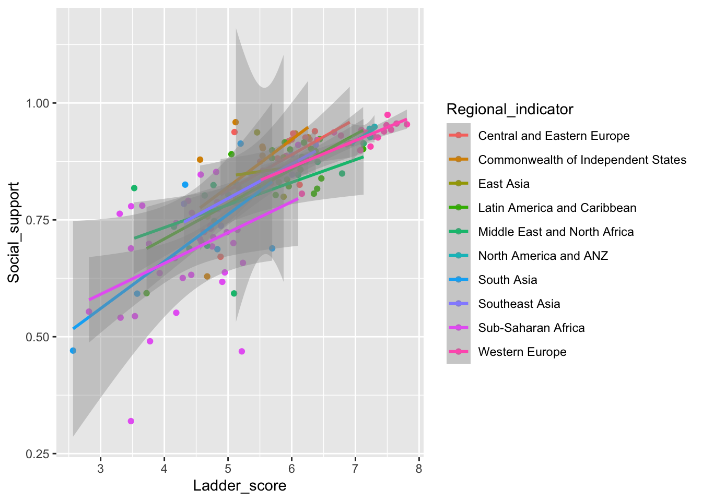
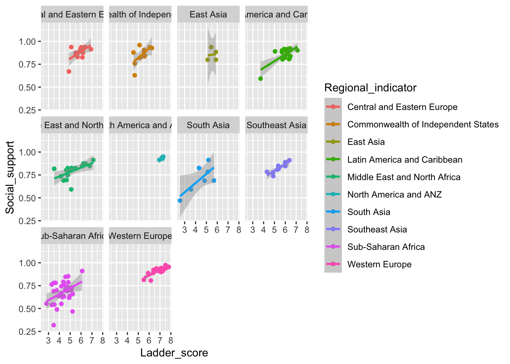
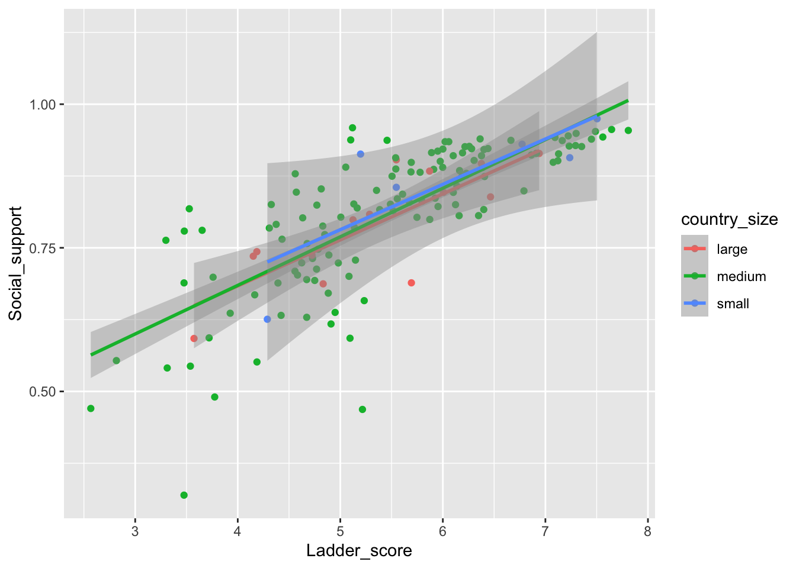
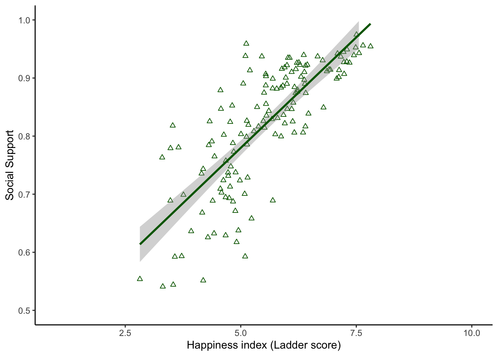

`geom_smooth()` using formula 'y ~ x'
Quarto enables you to weave together content and executable code into a finished document. To learn more about Quarto see https://quarto.org.
You must have the most up-to-date version of r-studio to use Quarto. If you’ve used rmarkdown you’ll see a lot of similarities but the visual editor in Quarto makes it easy to use!
Take a look at the yaml code at the top of this doc in R-studio. Here you can see global settings for the document.
We have set the format: html. You can change this to pdf or another format if you’d like.
We’ve added some of our own to control how the document executes.
Echo:
Think of this like “print”. All the source code you use in the cells below will print out in your document.
If you’d like to have the output of the code but not the code itself (eg. output the plot but not the code to generate the plot) set echo to false.
I usually set echo: false as a default and then if I want to include specific chunks of code I can set echo: true within that cell to override the default.
Include:
If include is set to false it won’t include your code or the output. The code will run in the background but none of it will appear in the doc. This is great if you need to do some data cleaning or other background coding that is necessary but doesn’t need to be featured in the output doc.
I set include: false as a default because most of the cells in the doc aren’t the plots or the stats I want to output. Then I set include: true in the specific cells with my plots, tables, and stats.
When you click the Render button a document will be generated that includes both content and the output of embedded code.
You can embed code like this:
Let’s ask if there is a relationship between happiness (ladder score) and social support
Because I’ve set echo and include to false at the top of the document the above code won’t print out (ie. if you’re reading the pdf you’ll be like “what code????”).
Look at what happens if I set include: true in this cell. The #| symbol indicates an option you’re setting.
`geom_smooth()` using formula 'y ~ x'
Now lets also set echo: true.What changes?
ggplot(happiness, aes(x = Ladder_score, y = Social_support)) +
# make a scatter plot
geom_point() +
# add a best fit line
geom_smooth(method = 'lm')`geom_smooth()` using formula 'y ~ x'
Now that we know how Quarto works. Lets explore our data a little more. To see the code I’m using make sure to look at the quarto document within r-studio.
Let’s see if the relationship between happiness and social support changes with region.
`geom_smooth()` using formula 'y ~ x'
This is hard to see. Let’s group a different way.
`geom_smooth()` using formula 'y ~ x'
This is a little easier. A few things I notice from this plot that I should keep in mind for analyses:
Maybe its better to group by country size instead of individual region.
`geom_smooth()` using formula 'y ~ x'
Again, all of these lines overlap and the groups don’t seem to separate by size at all. So I will go back to the first plot and make it look more publication ready. The code will be included in the pdf too.
ggplot(happiness, aes(x = Ladder_score, y = Social_support)) +
# use color not fill because the dots on the scatter plot and the line only have a "color" attribute.
# Fill could be used to change the color of the standard error around the line.
# make a scatter plot with green triangles
geom_point(color = 'dark green', shape = 2) +
# add a best fit line and use the same color scheme
geom_smooth(method = 'lm', color = 'dark green') +
# set the y axis to go from 0.5-1 and the x-axis to go from 1-10
xlim(1,10) +
ylim(0.5,1) +
# rename the axis labels
xlab("Happiness index (Ladder score)") +
ylab("Social Support") +
# set the theme
theme_classic()`geom_smooth()` using formula 'y ~ x'Warning: Removed 4 rows containing non-finite values (stat_smooth).Warning: Removed 4 rows containing missing values (geom_point).
We looked to see whether there was a relationship between happiness and social support. We found a positive relationship: Happier countries also report higher levels of social support. This relationship was consistent across region and country size.